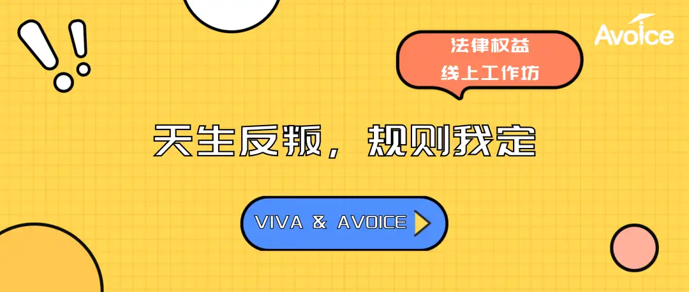
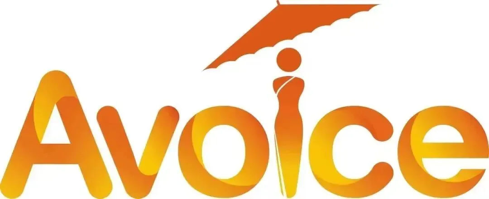
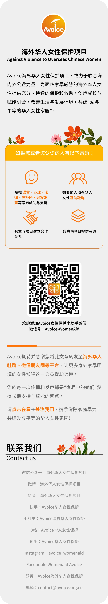

以下文章来源于VIVA画出生命 ，作者VivaLife
每个人都是生命的艺术家



VIVA x Avoice
“天生反叛 ，规则我定”
线上工作坊预告
“如果我们不继续反对，
他们的声音就会掩盖其他，
最终他们将摧毁一切。”
—— 《傲骨之战》
图源美剧《傲骨之战》
《傲骨之战》延续律政精英剧基调，但侧重于讲述女性在职场和现实中的斗争。剧情紧跟时事，探讨了一系列政治和法律上关于女性法律权益事件。剧中女性经历真实地反映了女性在职场上遇到的问题，但正如剧名一样所有剧中女性刚强不屈，敢于与不公正作斗争。该剧还尝试讨论新时代下女性遭遇的困难，如元宇宙中的性骚扰案件、网络性别暴力和跨性别权益界定。世界快速变化的当下，女性权益问题亦变得更复杂。
活动背景及介绍
近来许多侵害女性的社会事件令人心痛，而喧嚣舆论指向个人之恶。当世界走向保守主义，女性权益更易遭受极端思潮的侵害。社会传统观念和极端宗教阻碍女性获得生育自由，关于女性生育权的讨论已从生命保护偏离至厌女主义，引发了全球抗议运动。保护女性权益的进程道阻且长。
然而，尽管前路艰辛，但总有人为女性权益发声。
如《傲骨之战》中的戴安，如现实中推动出台、修订女性权益法规的女性群体。
我们年轻一代，从前是旁观平权斗争的受益者，现在平权事业的接力棒交给了我们。我们可以成为在法庭上坚定捍卫女性权益的“戴安”，也可以是政治领域推进女性权益发展的“邓颖超”。
8月，VIVA与Avoice就已合作开展“How To Become Yourself”女性生命力线上分享会 ，并且收集了十余幅生命画像和多位参与者的寄语，嘉宾与参与者也通过生命画像叙述表达自我，寻找到内心的自由和力量。
左右滑动查看更多
“How To Become Yourself” 线上工作坊生命画像回顾
11月18 日，VIVA将再次携手Avoice开展 “天生反叛，规则我定” 女性法律权益线上工作坊，诚邀关注女性生命力、女性主义、妇女权益保护等领域的伙伴们参加本次活动，与嘉宾共同探讨公共事务空间内的女性未来发展之路。Avoice长期致力于保护海外华人女性的权益发展，拥有丰富的法律经验和项目经历。
VIVA期待携手Avoice，不拘于文字和语言，不拘于表达的限制，以艺术创作汇聚多元理念，迸发女性主义议题下的深度思考。
本次线上工作坊有幸邀请到赵田松老师与张语嫣女士两位在社会公益服务、妇女权益保护等领域研究和工作的嘉宾。赵田松老师作为中国杭州益嘉仁社会工作服务中心的理事长，常年致力于社会公益服务事业，在Avoice多次展开针对反家暴救助志愿者的线上培训活动。而张语嫣女士虽仍在校攻读学士学位，但她同时也是海外华人女性保护项目法律学术处新加坡小组负责人，为Avoice提供法律专业知识上的援助。
赵田松
中国杭州益嘉仁社会工作服务中心理事长，
中国司法部精品课程《民间纠纷调解》
课程组专家中国社会工作师，
中国国家二级心理咨询师、曾任联合国志愿者，
Avoice项目特聘专家顾问
张语嫣
北京大学法学院大四在读，
海外华人女性保护项目法律学术处
新加坡小组负责人，
现于哥伦比亚大学法学院交换，
为多名北大教授担任研究助理和助教，
于多家法律NGO与外所实习
除了嘉宾分享外，本期工作坊还将新增“画说生命”接力共创环节，参与者有机会把自己从本次活动中获得的关于女性权益之路的感悟与启发，用画笔具象成艺术元素，在一笔一画中“画说”生命、“画说”女性之力；这同时也是一次展现自身创造力、表达自我、与嘉宾以及同伴互相碰撞交流的机会。
活动流程先览
我们希望通过“女性觉醒时刻”、“女性改变规则”等主题，找到促进女性群体加入影响公共事务的共鸣点，为下一代女性群体打造性别友好的世界。
活动主题：“天生反叛，规则我定” 线上主题工作坊
活动时间：2022年11月18日
报名方式： 扫描下方二维码添加工作人员，工作人员在审核后将邀请进微信社群。小伙伴们可以在群内与嘉宾老师、朋友们互动并获取活动详细信息~
VIVA和Avoice期待大家
共聚本次线上主题分享会，
一起探讨女性社会权益之路！
我们是谁 | 合作组织
Viva la Vida是一个在全球超过50个国家具有影响力的国际组织，启发年轻人思考生命、认识自我，以艺术作为媒介更好地感知生活、与他人建立有意义的情感连接。迄今，VIVA已成为具有全球影响力的跨文化IP，其合作伙伴包括联合国、G20 YEA、APEC、Facebook、今日头条、阿里巴巴、中国联通。

一个以海外华人女性为主要帮扶对象的长期性志愿项目。旨在用青年公益力量为海外华人女性提供及时、充分的家庭暴力伤害救助，通过与海外华人组织、女性救助机构、学术机构和政府部门建立合作关系，加强公众对海外华人女性生活困境的关注，为面临家暴威胁的海外华人女性创造安全平等的生存和发展环境。
出品机构｜Viva la Vida
出品人｜吕晓宁
合作组织｜Avoice
海外运营部负责人｜沈宇欣
项目负责人｜侯娅茹
海外运营部团队｜沈宇欣 侯娅茹 何玉婷 周子牧
文案｜何玉婷
排版｜侯娅茹 戴翰林


